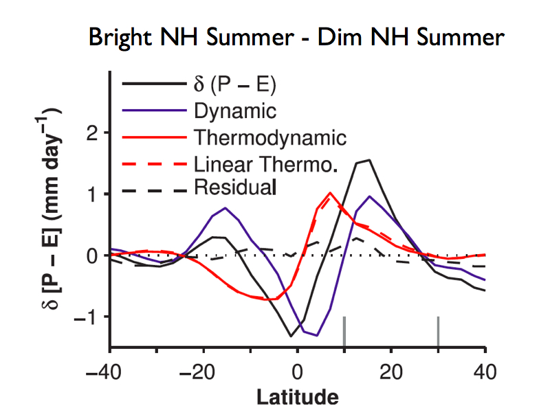

|
The hydrological cycle and large-scale atmospheric circulations play a fundamental role in determining climate changes. Understanding how the water vapor, angular momentum, and energy balances of Earth's atmosphere respond to radiative forcing is central to interpreting future climate projections and paleoclimate reconstructions. The figure to the right illustrates how both changes in the humidity distribution ("thermodynamic" changes) and in the time-mean circulation of the atmosphere ("dynamic" changes) can affect the precipitation response to variations in the time of year when the Earth is closest to the Sun (orbital precession). This figure is adapted from Merlis, Schneider, Bordoni, and Eisenman 2013 (available here). |  |
|
The response of tropical cyclone (or hurricane) frequency to climate changes and the factors controlling the climate dependence of cyclogenesis have important implications for risk assessment. My research makes use of recently developed high-resolution global atmospheric general circulation models, which are capable of explicitly simulating tropical cyclones and global-scale circulations. The figure to the left shows tropical cyclone tracks from an aquaplanet simulation. We have demonstrated that the use of simplified boundary conditions can clearly isolate important factors, such as the latitude of the maximum tropical rainfall, in determining tropical cyclone frequency. This figure is adapted from Merlis, Zhao, and Held 2013 (available here). |
|
The response of the global-mean surface temperature to changes in greenhouse gas concentrations—the climate sensitivity—is a key aspect of uncertainty in projections of future climate. Observed changes, such as the climate response to volcanic eruptions, may be helpful constraints on the climate sensitivity. However, uncertainties associated with internal climate variability and possible nonlinearities in the climate system must be assessed. The figure to the right shows the short-term surface temperature anomaly (normalized by the global mean anomaly) for three different radiative forcing simulations: abruptly doubled carbon dioxide concentration (top), abruptly halved carbon dioxide concentration (middle), and stratospheric aerosol radiative forcing of the volcanic eruption of Mount Pinatubo (bottom). This climate model-based result suggests the similarity between warming and cooling perturbations and between different radiative forcing agents (carbon dioxide vs. stratospheric aerosols) is adequate for the observed climate response following volcanic eruptions to be a constraint on the transient climate response to increases in greenhouse gas concentration. This figure is adapted from Merlis, Held, Stenchikov, Zeng, and Horowitz 2014 (available here). |